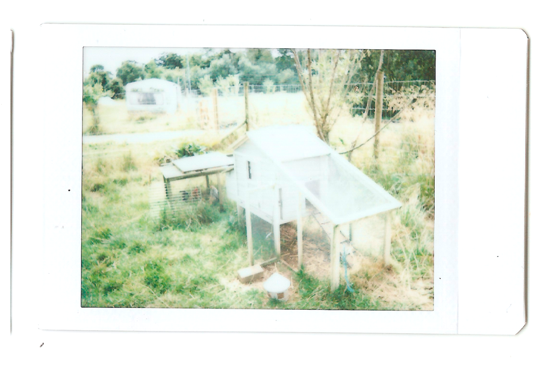

Willowbrook Farm
Pelin Keskin and Hudda Khaireh
Interview by Sofia Niazi
Illustrations by Olivia Twist
As the London neighbourhoods we grew up in transform beyond recognition to make way for new residents and audiences, we take a step back to assess the damage. We catch up with researcher and curator Hudda Khaireh and food journalist Pelin Keskin for a frank conversation about food, class and encroachment.
We moved to the farm when I was around 14 years old, so smack bang in the middle of my teenage years. While I’d had a fairly rural upbringing until then (#villagelyfe), it didn't really prepare me for what came next. We went from living in a normal house with solid walls, central heating, flushing toilets, real beds, to living like Medieval peasants: all living in one room, sleeping on the floor, huddled around a single woodburning stove. Before we hooked the electricity up, we’d use the stream as our fridge by lining bottles of milk up by the bank.
You can get used to anything. Humans are adaptable, and after a while it did feel normal, but I noticed the difference when comparing my life to my friends’. I remember going for sleepovers, and instead of feeling envious of my friends toys or books or clothes, I’d covet their central heating or their showers. I’d try to imagine what their lives were like. They’d go home from school, just like me, and then what? A few chores? Play games? Read books? I couldn't get my head around it anymore. They didn’t have to collect eggs or tramp through chicken shit and mud every morning, hands freezing in fingerless gloves. They didn’t have to brave the cloying, stinking, feathery warmth of the chicken house. They didn’t carry baskets of laundry across the field to the car, and back again in the evening, still wet because we couldn’t afford the dryer on top of the cost of washing. I remember when we finally got our own washing machine, we put it outside the cabin and when it spun the whole house would shake.
It’s easy to get caught up in the daily work of the farm, any job can become dull after all, but I do appreciate being out in the countryside. When I was 15, an insomniac and going through something of a religious and personal identity crisis, I’d leave the house at midnight and go wandering around in the fields, staring up at the sky, railing against God and myself. Sometimes I’d take the dog with me, but often I’d go alone and just walk and talk and sit still until I was too cold to stay outside.
When I’m in a city, it’s that feeling of being unable to go out and find solitude that I find hardest. I never thought I’d be a country girl, the bright lights keep seducing me back to cities, but I think after all, my heart’s in green, open fields.
As much as I love the farm, I don’t want to work here anymore. I spent two years working here full-time as a real job before I decided to go back to Uni, and that was enough for me. I’m not a farmer, and I don’t get the same pleasure and genuine contentment that I can see my siblings and parents do. I do want to come back and run arts workshops and events here though as the farm has a lot more to offer in terms of reclaiming traditional arts and crafts. But cradling tiny shoots of green life and planting them in rich fertile soil, the summer sun shining around me, birds chirping, smell of life and loam? Nah. Doesn’t really do it for me.
My advice, if you’re thinking of going into farming, is to not think about it too much! You don’t want to know the reality of farm life, of staying up all night checking the ewes during lambing, of losing birds to the fox and finding just feathers and blood, the losses, the bad days, the arguments, the mud. Oh God, so much mud. OK, I suppose a bit of research is a good idea. Go to your local farmer's market and chat to people there, join WWOOF and do some actual farm work, or come visit us at Willowbrook and ask questions.
Farm life follows a fairly steady routine, our jobs are lead by the seasons, by the sun. There’s always something to do, animals that need to be fed, vegetables to be collected or planted, there’s always weeding, watering, sorting eggs, checking the sheep or organising orders.
I call the farm a black hole because as soon as I get home I get sucked into the constant rolling on of life and work, and leaving is impossible. Oxford is a whole ten miles away and distances take on unreal proportions. You blink and realise three days have gone by. But you miss it when you leave-I do when I go back to Uni. My brother has just moved to Austria and he called me a couple of days ago, “There’s so much time in the day”, he said, “I don’t know what to do with myself.”
I guess I’ve turned into one of the friends whose lives I used to covet, with all that free time. It’s a bit boring actually. I might go back to the farm next weekend...
